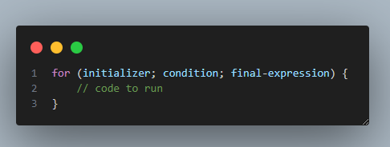
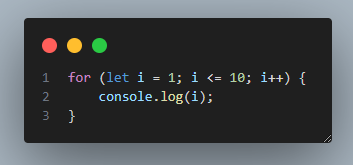
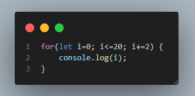
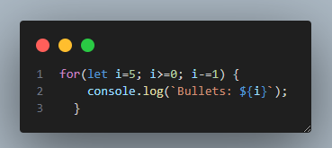

Loops
Loops allow you to run the same code multiple times. This is useful, for example, when drawing animations in games, or creating a countdown. The for loop has the following syntax:
The initializer is a variable, which increments the number of times the loop has run.
The condition is used to stop the loop.
The final expression is run each time after the loop's code has run. It is usually used to increment the variable used in the condition.
Each run of the loop is called an iteration.
Here is an example of a for loop outputting the number 1 to 10:
The loop creates a variable called i and initializes it to 1.
Then, after each iteration, it increments the i variable by 1.
The loop stops when i reaches 11, breaking the condition.
Let's make another loop, which outputs only the even numbers from 0 to 20:
We increment i by 2 after each iteration, resulting in only the even numbers.
The for loop
Let's write a program for a shooter game, which will control the number of shots fired. At the start of the level, the player has 5 bullets. Each time the player shoots, the number of bullets should be decreased by 1. The for loop will help you here as well:
Lesson Takeaways
Great job! Let's summarize what you've just learned:
loops allow you to run the same code multiple times
the for loop has 3 components: the initializer, the condition, and the final expression